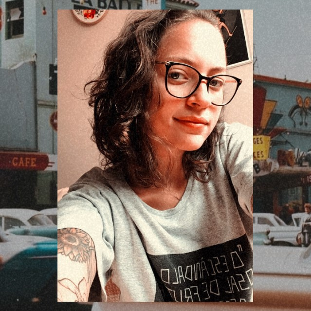

Sou apaixonada por tudo que envolva design digital, interface e tecnologia. Adoro trabalhar com quem deseja soluções com ótimo design e experiência.

Designer Gráfica
Estou no mercado do Design Gráfico há 8 anos, tendo vasta experiência em produção de materiais gráficos para campanhas online e offline, peças gráficas e diagramação.
UI/UX
Entusiasta nos estudos sobre UI e UX Design para que em cada projeto, seja ele online ou offline, a experiência e usabilidade estejam em primeiro lugar. Sigo dedicada em aplicar seus princípios em meus projetos.
Dev. Web Front-end
Estou iniciando os estudos em desenvolvimento web front-end e cada mais encantada pela diversidade das tecnologias utilizadas na área.